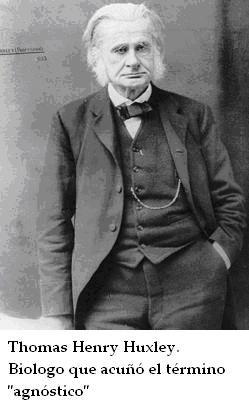

Muchos no creyentes dicen ser agnósticos antes que ateos. No creen que Dios exista, pero no están seguros y entonces son renuentes a llamarse ateos. Una actitud común es decir: “Tal vez hay algo allí afuera. A fin de cuentas, no lo conocemos todo”.
¿Cuán seguros de la inexistencia de Dios debemos estar los que nos autodenominamos ateos? Obviamente, no podemos estar 100% seguros de nada. Pero podemos estar 99,99999% seguros de un montón de cosas, y eso es normalmente suficiente para tomar las decisiones diarias de nuestra vida. No podemos estar seguros de que no caeremos y nos romperemos el cuello al bajar de la cama en la mañana, pero no nos quedamos en la cama por eso. Viajamos en autos y en aviones, donde las probabilidades de sobrevivir no son del 100%, pero sí bastante cerca como para hacerlo. En esos casos, hacemos un análisis de riesgo-beneficio y decidimos que el beneficio justifica el riesgo.
Algunas cosas son, para todo propósito práctico, seguras. Si saltamos desde una ventana del décimo piso, podemos estar bastante seguros de que nos daremos un feo golpazo, no por la caída, como se dice, sino por la llegada. Ahora bien, un avión con un colchón atado a su ala podría pasar justo como para salvarnos. De nuevo, como se dice, “todo es posible”. Pero este es un ejemplo del tipo de cosas posibles con las que hemos aprendido a no contar.
Así que, ¿cuál es el límite entre el agnóstico y el ateo? Si dibujamos la línea en el 100% de certeza, entonces no quedaría ningún lugar para los ateos. En ese caso, no habría ateos ni en una trinchera. Sin embargo, algunas personas se autodenominan ateos, incluyendo muchos que han pasado tiempo en trincheras. La palabra debe de significar algo para ellos. Sugiero que los ateos son personas que han evaluado las posibilidades, hecho el análisis riesgo-beneficio, y encontrado que la existencia de Dios es tan improbable que prefieren vivir sus vidas sin todo el lastre que toda creencia te fuerza a cargar.
El lastre de la creencia es pesado. No sólo se espera que dones tiempo y dinero a tu iglesia, sino, lo más importante, se espera que cambies tu cabeza. Y, como ha dicho Dan Quayle, “perder la cabeza es algo terrible”.
Cuando eres un miembro fiel de alguna religión, no eres libre de usar tu propio juicio en lo que sea mejor para ti, para tu familia y la sociedad. Más bien, se espera que aplaces el juicio por el de otros que aseguran tener la autoridad sobrenatural. Y desde el momento en que ellos no ofrecen evidencia para avalar lo que dicen excepto su propia palabra, se te pide que evites usar tu propio intelecto en el proceso.
A lo largo de los siglos, muchos intentos han querido probar el basamento racional de la creencia sobrenatural. Todos han fallado. Los predicadores pueden todavía atraer clientes hacia sus argumentos simplones con aire de lógicos, del estilo: “¿como podría esto -el universo, la vida, la conciencia- haber surgido desde la nada?”. Ellos les aseguran a sus oyentes que Dios lo hizo todo. Pero consideren lo absurdo del argumento: algo no puede surgir de la nada, y entonces debe provenir de Dios… que surge de la nada.
Últimamente, la creencia en una realidad indetectable y trascendente ha acabado en la fe antes que en la razón. Las iglesias han convencido a la mayor parte de la raza humana de creer en lo increíble, darle crédito a lo inverosímil, racionalizar lo irracional. Un ateo es alguien que no puede creer en algo que no tiene base racional, que es nada más que una fantasía y una delusión arrastrada desde la infancia ignorante y supersticiosa de la raza humana.

Volver a Simplemente ateísmo
Comentarios
Comments powered by Disqus